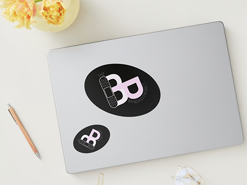

Course: Design Fundamentals - Fall 2021 - Graphic Design
This piece was designed based on architectural shapes around the University of San Francisco campus. It
explores the different shapes that make up a building as well as plays with shadows in design.
B-Roll
Course: Visual Communication I - Fall 2022 - Product Design
Capture memories, collect moments, connect meaningfully, B-Roll is a digital scrapbook for all of life’s
outtakes. The mobile application explores a new kind of social media that centers around human
connection.
Meraki Poster Series
Course: Visual Communication I - Fall 2022 - Graphic Design
Meraki is a fictitious poster-printing company. The design encompasses the brand’s bright and youthful
identity. The final design consists of a two-set poster series advertising the company and its services.
KD's Donuts
KD’s Donuts - November 2020 - Brand Design
KD’s Donuts is my parents’ family-run donut shop in Foothill Ranch, California.This rebrand of the
business aimed to give it a greater sense of identity. This included developing a new color palette,
logo designs, flyers, business cards, t-shirts, and mobile menu.

The Band-Aid Project
The Band-Aid Project - Fall 2020 - Brand Design
The Band-Aid Project is a fictitious organization that aims to destigmatize conversations surrounding
mental illness and place a metaphorical band-aid on "invisible struggles" so that others become more
aware of them.